Crisis damage mapping by the people on the ground.
After an earthquake, flood or conflict, Beacon turns affected residents into a sensor network. Anyone can photograph a damaged building, grade it, and pin it to a footprint — even with no signal. An analyst team verifies and triages in near real time, then exports the result to the tools responders already use.
Three clients, one backend
A single Go + PostGIS service serves one camelCase JSON contract to every client, so the field, the analyst and any partner system read the same data.
The community
A native Compose Multiplatform app. Capture a photo, a 3-tier damage grade and a location on a building footprint, queue it offline, and let it sync on its own. No account required.
The response team
A web console: live map, damage breakdown, a verification and triage workflow, and one-click humanitarian exports. Role-based access.
The system of record
A stateless Go service over PostgreSQL + PostGIS: per-building versioning, admin-boundary (P-code) reverse-geocoding, JWT/RBAC, and interoperable exports.
How a resident reports
A short, guided flow that works offline. Designed so a frightened person on a low-end phone with no signal can still help responders find them. Screenshots below are the live iOS app against the real backend.
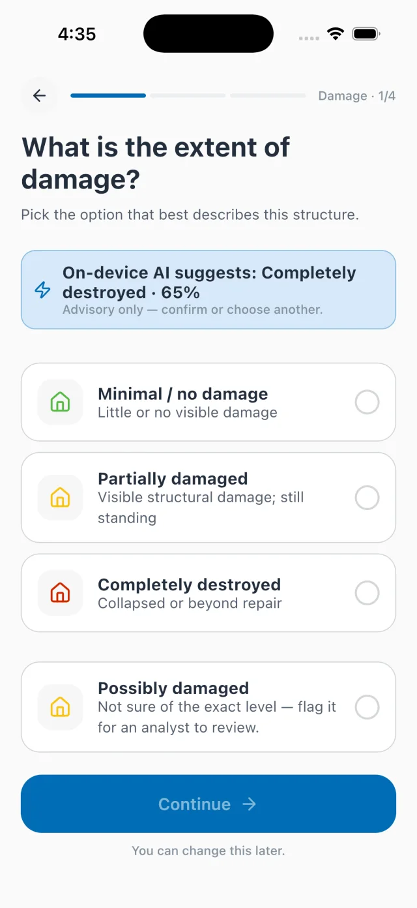
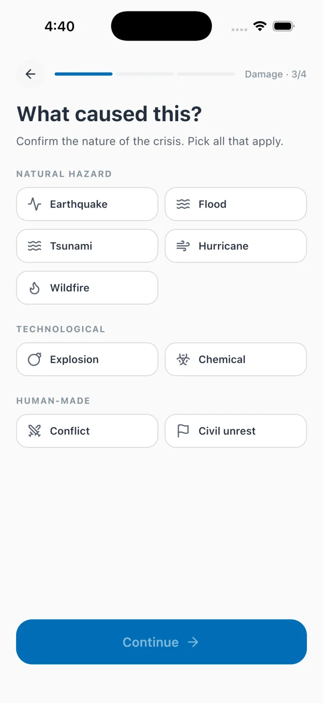
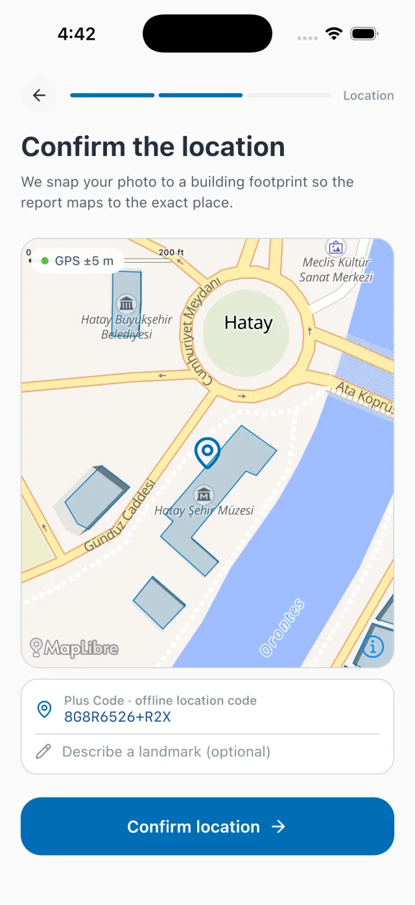
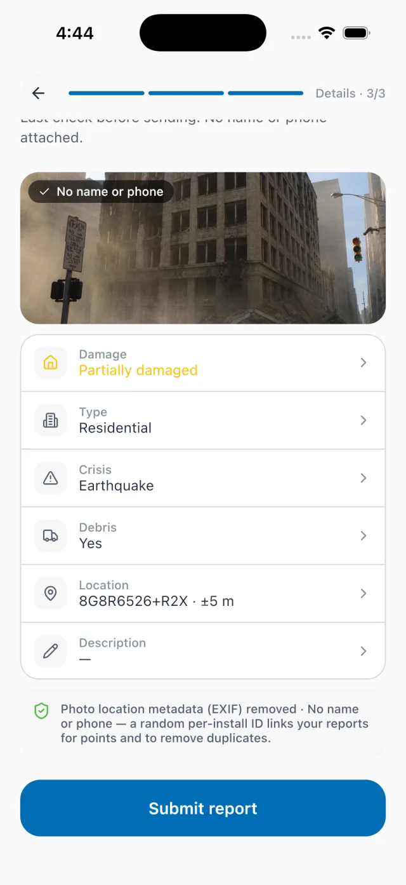
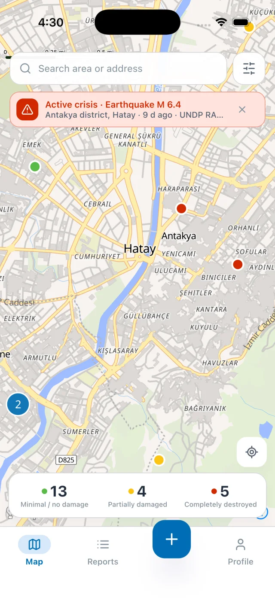
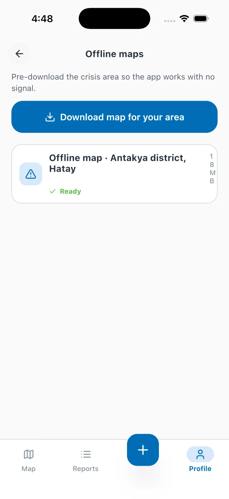
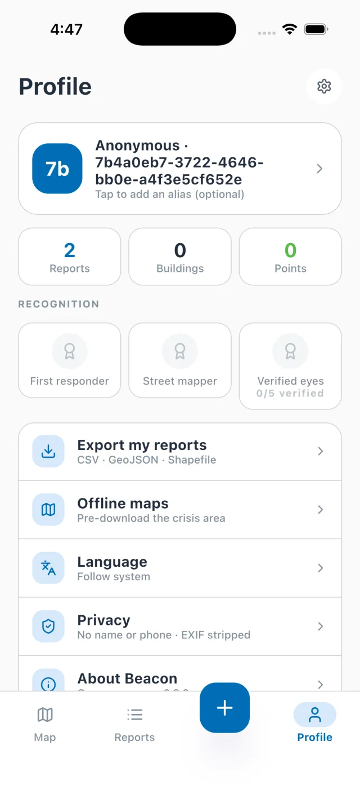
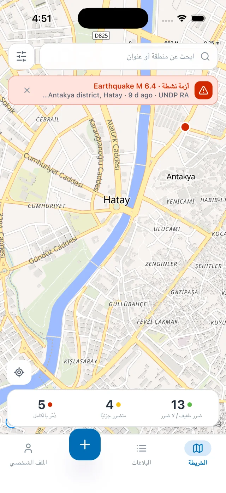
Reports are written to a durable on-device outbox and upload on their own the moment connectivity returns. The on-screen state reflects the real network and the real upload — never a fake progress bar.
No login, no name, no phone number. On capture, the photo's GPS / timestamp / device EXIF is removed and faces are blurred — both on the device, before the report leaves the phone.
The damage model runs on-device (TensorFlow Lite on Android, Core ML on iOS). It suggests a tier and abstains when unsure. A human always makes the call.
Where reports become response
Live at beacon.stepanok.com. Every screen below is the running console reading the live backend.
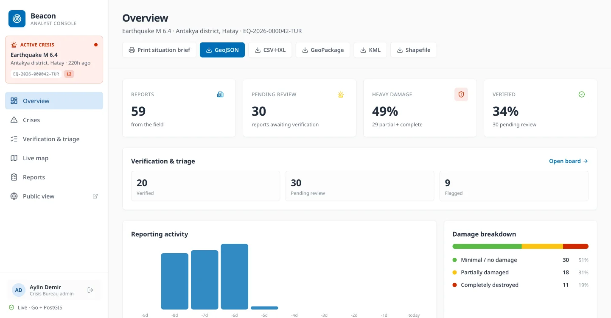
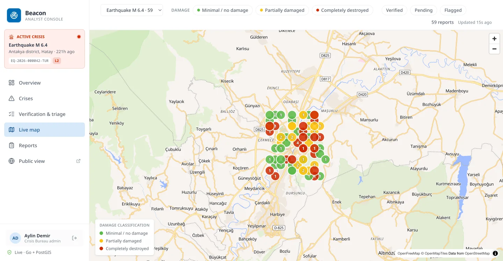
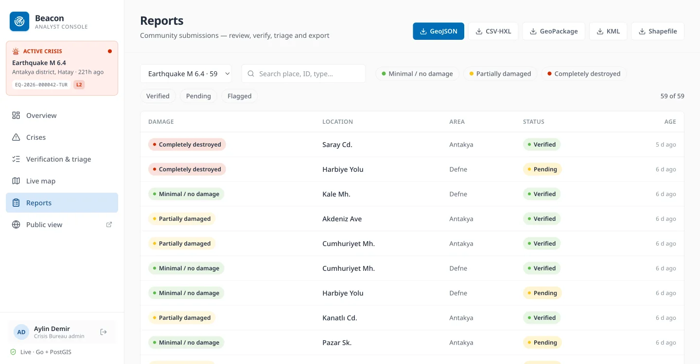
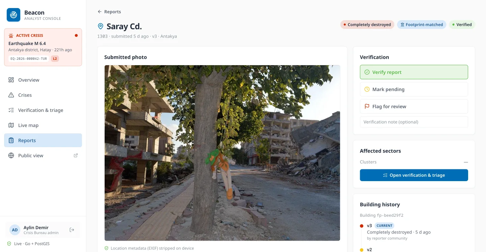
Verify, with the building's full history
Each report opens with its photo (EXIF stripped), the assessment, and verify / pending / flag controls. Repeat reports about the same building collapse into one latest-wins version chain, so the detail shows how a structure went from minimal to partial to complete across assessments. Every verification decision is written to an audit trail with the acting analyst; verifying a photo-less report needs an explicit override.
A public view that protects reporters
Anonymous and external-viewer access gets an aggregated community map: only verified locations, coordinates coarsened to roughly 110 m, and PII or operational fields stripped. Exact footprints stay with authenticated responders. The same view localises into Arabic.
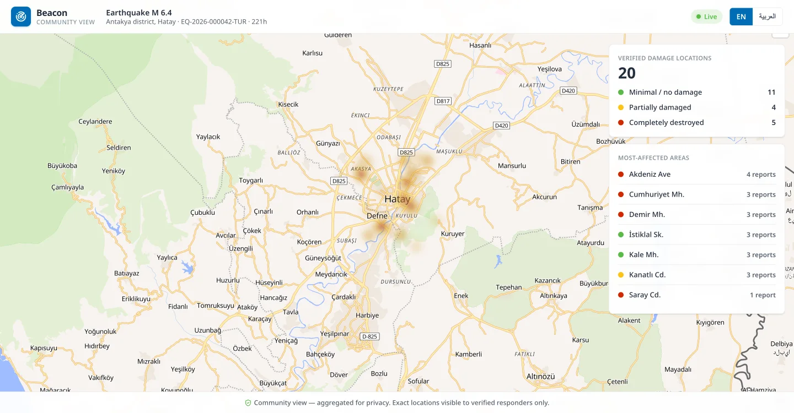
Field validators and analysts confirm or flag each report. Photo-less reports need an explicit override, and every decision is audited with the acting analyst.
Group by area, grade and H3 hotspot cell to see where the heaviest damage clusters. Beacon hands verified ground truth to responders' own systems — it isn't a dispatch tool.
One click to GeoJSON, HXL-tagged CSV, GeoPackage, KML and Shapefile — ready for OCHA / cluster tooling and to layer onto satellite maps.
Built on the standards responders already use
Beacon drops into the humanitarian pipeline instead of becoming a bespoke silo.
The challenge-mandated 3-tier damage scale
Damage colour is always paired with a label, so the scale is legible to colour-blind users and on a sun-washed phone screen.
Geography partners understand
Every report is reverse-geocoded against COD-AB administrative boundaries and tagged with P-codes (adm1/2/3). Crises carry a GLIDE event id and a response level, so data lines up across agencies and regions worldwide.
Damage that changes over time
Repeat reports about the same building collapse into one latest-wins version chain, so the map shows the current state, not a pile of duplicates. The full timeline stays queryable per building, and capture-time de-duplication warns reporters before they file another.
Roles & access (RBAC)
| Role | Scope | Can do |
|---|---|---|
| Field validator | Assigned crisis | Verify / flag reports in the field |
| Country-office analyst | One crisis | Verify, triage, annotate, export |
| Regional analyst | Region (multi-crisis) | All analyst actions across a bureau region |
| Crisis-bureau admin | All crises | Full access incl. cross-crisis oversight |
| External viewer | Read-only | Situational awareness for partners |
Reporters stay anonymous (device id). Analysts authenticate with JWT plus optional TOTP multi-factor; the same contract drops onto a real identity provider (Azure AD / OIDC) without app changes.
Designed for people in their worst week
Data minimisation first, and defence in depth around what is collected.
EXIF GPS / timestamp / device tags are stripped, and faces and licence plates are redacted locally before upload (ML Kit on Android, Apple Vision on iOS). Reports are pseudonymous — a random per-install id, no name or phone.
The public map shows verified locations only, coarsened to roughly 110 m, with PII and operational fields removed. Exact footprints are visible to authenticated responders only.
Photos and secrets are encrypted at rest (AES-256-GCM). Analyst auth is JWT with optional TOTP MFA, DB transit TLS is enforced in production, and the mobile app pins the API host to the Let's Encrypt roots.
Reporter-initiated takedown is supported end-to-end: a reporter can withdraw a report from the same device, which truly erases it. Face and plate redaction both run on-device today; a higher-accuracy dedicated plate model is a continuing improvement.
Advisory, on-device, and measured honestly
The only model in the loop is a small image classifier that suggests a damage tier. There is no generative AI in the reporting or assessment path.
Trained on ground-level structure imagery from wildfire (Cal Fire DINS) and earthquake (PEER Hub Φ-Net) datasets, so earthquakes are in-domain. The model runs entirely on the phone, suggests a tier with a confidence, and abstains below a floor. It never auto-selects: the reporter taps to confirm, and an analyst verifies later. The honest weak spot is the ambiguous "partial" tier — which is exactly why a human stays in the loop.
Production-minded from day one
One small server runs the whole thing.
Kotlin Multiplatform + Compose (Android & iOS), Voyager + MVI + Koin, MapLibre, Ktor. One codebase, native on both platforms, with an on-device damage model (TensorFlow Lite / Core ML).
Go (chi + pgx) over PostgreSQL 16 + PostGIS. A single distroless binary, embedded migrations, JWT/RBAC, rate limiting, at-rest encryption for photos and secrets, and enforced DB-transit TLS.
Next.js 16 + React 19 + Tailwind, MapLibre GL. Talks to the same public / analyst API over HTTPS.
The console is live
Running an M 6.4 Antakya earthquake scenario — currently 59 reports across nine neighbourhoods. The data is synthetic, for demonstration only.
Analyst console
beacon.stepanok.com — sign in with a demo account (password beacon123):
regional@undp.org and validator@undp.org are seeded too, for the full role ladder. Or open the public community view with no login.
Reporter app
The Android & iOS app points at the same live backend. The community map, capture flow, GPS, camera, on-device AI and offline pack all run against real data, with no mock layer.
What's live, and what's next
Everything shown above runs for real today. We're explicit about the rest.
| Capability | State |
|---|---|
| Live backend (Go + PostGIS), HTTPS, RBAC/JWT, seeded scenario | Live |
| Analyst console — overview, map, reports, verify/triage, public view, exports | Live |
| Reporter app — real camera, GPS, EXIF stripping, on-device face blur, live sync | Live |
| On-device AI damage suggestion (advisory, human confirms) | Live |
| Offline map packs (MapLibre offline regions, real progress) | Live · Android & iOS |
| Interop exports — GeoJSON, HXL-CSV, GeoPackage, KML, Shapefile | Live |
| At-rest encryption (photos + secrets), TOTP MFA, enforced DB-TLS, mobile cert-pinning | Live |
| 6 UN languages + Arabic RTL · reporter-initiated takedown (true erasure) | Live |
| On-device licence-plate redaction + face blur (ML Kit / Apple Vision), both platforms | Live |
| Real identity provider (Azure AD / OIDC) on the existing JWT contract | Roadmap |
| WhatsApp / SMS reporting channel · automated retention purge | Roadmap |